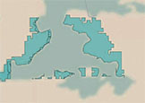

Educational Projects & Research
-
Building Linked Spatio-Temporal Data from Vectorized Historical Maps
with Craig A. Knoblock, Weiwei Duan, Yao-Yi Chiang, Johannes H. Uhl, and Stefan Leyk
 -
Worked on an unsupervised approach to convert vector data of geographic features extracted from multiple historical maps (i.e. railroad network) into linked spatio-temporal data. The resulting graphs can be easily queried and visualized to understand the changes in specific regions over time and fuel additional discovery in linked open vocabularies.
-
Python PostGIS TTL/RDF Semantic Web Knowledge Graphs Information Integration
-
B. Shbita, C. A. Knoblock, W. Duan, Y. Chiang, J. H. Uhl, and S. Leyk. Building Linked Spatio-Temporal Data from Vectorized Historical Maps, in Extended Semantic Web Conference, 2020
-
Music Latent Representation and Disentanglement for Genre Classification
with Ehsan Qasemi, Binh Vu, and Minh Pham

-
Investigated the use of unsupervised representation learning techniques to compress musical samples into a low-dimensional representation and use it for the task of music genre classification.
We facilitated the robust learning of disentangled representations (i.e., features like genre) by increasing the information capacity of the latent code during training. The training and evaluation of the models were done using the FMA public dataset.
Project conducted as part of the 'CSCI 699: Representation Learning: Theory and Practice' class. -
Python PyTorch Deep Learning Machine Learning Information Theory
-
Creating a FAIR Data Catalog to Support Scientific Modeling
with Binh Vu, Minh Pham, Dan Feldman, Arun Rajendran, Prof. Craig A. Knoblock, Prof. Jay Pujara, and Prof. Yao-Yi Chiang

-
Worked on combining, transforming and reformatting datasets and on identifying units of measurement in scientific data as part of a Data Catalog that provides a central clearinghouse for metadata about scientific datasets.
The framework supports fuzzy searching for data variables using NLP techniques, provides a number of automated, data-understanding tools to make data curation easier, and automates the processes for data processing and transformation for different use cases. -
Python TTL/RDF Semantic Web Knowledge Graphs Information Integration NLP
-
B. Shbita, B. Vu, D. Feldman, M. Pham, A. Rajendran, C. Knoblock, J. Pujara, and Y. Chiang. Creating a FAIR Data Catalog to Support Scientific Modeling, in Workshop on Advanced Knowledge Technologies for Science in a FAIR World (AKTS), 2019
-
Parsing, Representing and Transforming Units of Measure
with Arun Rajendran, Dr. Jay Pujara, and Prof. Craig A. Knoblock (University of Southern California)

-
Proposed a baseline unsupervised approach to identify units of measurement in source data, provide a corresponding semantic representation and a method (API) that enables data transformations such as unit conversions.
Our prototype system, called CCUT, uses grammar tools to automatically parse the different components in a unit found in textual data in files and maps them to elements of a standard ontology defined by NASA to form a structured semantic output. -
Python TTL/RDF Semantic Web Linked Data Knowledge Graphs Information Integration
-
B. Shbita, A. Rajendran, J. Pujara, and C. Knoblock. Parsing, Representing and Transforming Units of Measure, in Modeling the World's Systems, 2019
-
Marvel and DC-Comics comic-books Knowledge Graph
Supervisors: Prof. Pedro Szekely, Dr. Jay Pujara (University of Southern California)

-
Planned, designed, implemented and deployed a knowledge graph which captures Marvel and DC-Comics brands comic-book characters, comic-book issues and movies.
The system allows users to analyze data and easily navigate the KG and obtain insights for any question in this domain.
Project conducted as part of the 'INF 558/CSCI 563: Building Knowledge Graphs' class. Project includes web crawling, information extraction, source alignment, entity linking, ontology definition, querying knowledge graphs, data cleaning, image color analysis and RDF triples generation. -
Python TTL/RDF Knowledge Graphs Information Integration
-
IPoIB Router in the Switch-X Product Family: from Firmware Design to Implementation of the Verification Environment and the Debug Tools
under direction of Mr. Ami Marelli (Mellanox Technologies)
-
Executed an implementation and verification process of the IPolB Router firmware mechanism in the Switch-X IC, a Switch System Silicon designed by Mellanox Technologies.
The development was done in the firmware layer using different methods and tools, according to the company’s required methodologies. -
C C++ Python OOP RTOS Computer Networks Embedded Software
-
Physical Design of 12-bit Two's Complement Adder
Supervisors: Prof. Yosi Shacham, Mr. Avi Efrati (Tel Aviv University)

-
The project included hierarchical layout design, floorplanning, manual estimations and full layout simulations.
The Design was implemented using the 90nm Generic Process Design Kit (gpdk090) Technology and the gsclib090 library and was designed in Assura Virtuoso software.
Project conducted as part of the 'Introduction to VLSI design' course. -
PSpice Virtuoso CAD VLSI
-
Logic Design of Full Simplified DLX using FPGA
Supervisors: Mrs. Liron David, Mr. Marko Markov (Tel Aviv University)

-
This project includes hardware design, implementation and debugging of a simple RISC processor (including data and control planes) on an FPGA development platform.
Used Xilinx software package and RESA software suite to code schematic and hardware description language (VHDL) designs and conduct logical simulations.
The project also included writing and executing of Assembly programs on the design.
Project conducted as part of the 'Advanced Computer Structure Lab' course. -
VHDL Assembly FPGA
-
Kiosk Management: A Thesis in Systems Design and Programming with Web Services
Supervisor: Mrs. Inessa Bolotin (Israel Arts and Science Academy)

-
A user-friendly website for product purchasing.
The application features different levels of users and managers and enables them to view and add products to the catalog, prepare supplier-report and closely monitor expenses and revenues.
The system was used during senior high school year to raise money for students. -
C# ASP.NET JS CSS Web Fullstack
-
Improving Text-Independent Speaker Identification Performance Using Gaussian Mixture Speaker Models
under direction of Dr. David Palmer (HP Autonomy)

-
Studied Statistical Natural Language Processing, Automatic Speech Recognition and Machine Learning. Performed model training and testing with Python.
The research was conducted as part of the Research Science Institute (RSI), an intensive six-week program under sponsorship of the Center for Excellence in Education and hosted by the MIT. -
Python Machine Learning
-
B. Shbita and D. Palmer. Improving Text-Independent Speaker Identification Performance Using Gaussian Mixture Speaker Models
Personal Projects & Others
-
Dreams
Metaburn

-
A platform for planning and crowdfunding co-created events. This version was the adoption of the Midburn - Israeli Burning Man regional community.
-
Ruby on Rails JS CSS Web Fullstack
-
Distance Based Spiral

-
This application features a recursive spiral-drawing based on Ultrasonic Distance Sensor data transmitted via an RS-232 serial port.
-
Arduino Processing Interactive DIY Electronics
-
Customized Simple Arduino Synthesizer

-
A self-made sound synthesizer running on Arduino Uno board. The circuit features photoresistors and potentiometers to control the notes (frequency) and timing; the sound is produced with a passive buzzer.
-
Arduino DIY Electronics
-
Poké-Quest

-
A self made Pokémon-like game running on Processing IDE.
Graphic patterns owned by Nintendo © -
Processing Application